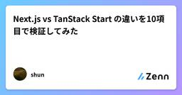

直近1週間の人気フィード
はてなブックマーク数を元に新着優先で並べ替え

Claude Codeが「AGENTS.md」に対応。CLAUDE.mdが存在しない場合、自動的に読み込み 152
152 Publickey
Publickey
Anthropicは、Claude Codeの9月18日付けアップデートClaude Code 2.1.277で「AGENTS.md」の読み込みに対応したことを明らかにしました。 以下のように説明されています。 Added AGENTS...
3日前

Go言語で書かれた高速なIDE「Rune」、オープンソースで公開。ターミナルとコマンドプロンプト中心の開発環境、複数リモートノードをローカルのように操作可能 67 Publickey
開発ツールベンダのUnstablebuildは、Go言語製のIDE「Rune」をオープンソースで公開したことを発表しました。 Runeの画面 RuneはGo言語によるネイティブアプリケーションとして提供される高速なIDEです。GPUによる描...
2日前

Cloudflare、Python Workersを正式サービスに。PythonでWebサイトの構築、データベース接続、オブジェクトストレージ操作など 103 Publickey
Cloudflareは、同社のサーバレス実行基盤上でPythonを実行できる「Python Workers」が正式サービスになったことを発表しました。 JavaScriptによるサーバレス実行基盤のCloudflare Workers上でW...
3日前

Next.js vs TanStack Start の違いを10項目で検証してみた 4 Zennの「frontend」のフィード
Zennの「frontend」のフィード
はじめにこの記事では、Next.js と TanStack Start を、実際にコードを書きながら 10項目 で比較検証します。Next.jsは、Vercel社が開発し、App Router / RSCといった特徴を持つReactフレームワークです。一方TanStack Start は TanStack Router と Vite をベースにしたフルスタック React フレームワークです。結論を先に書くと、エコシステムが成熟・高パフォーマンス・安定運用を重視するならNext.js型の一貫性・デプロイ先の自由度を重視するならTanStack Startという分類に...
4日前